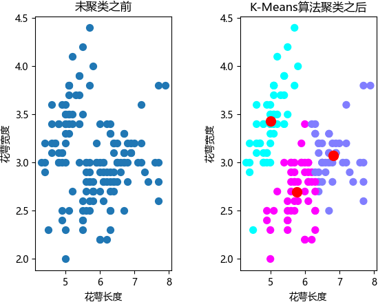

K-means聚类算法的应用以及实现
K-means 聚类算法属于无监督学习，它会将相似的对象归到同一个簇中，该算法原理简单，执行效率高，并且容易实现，是解决聚类问题的经典算法。
尽管如此，任何一款算法都不可能做到完美无瑕，K-measn 算法也有自身的不足之处，比如 K-means 需要通过算术平均数来度量距离，因此数据集的为维度属性必须转换为数值类型，同时 K-means 算法使用随机选择的方式来确定 K 的数量和初始化质心 ，因此不同的随机选择会对最终的分簇结果产生一定程度的影响。
举个简单的例子，一个赛季结束后，篮球队要对队员的整体表现进行聚类分析，此时每位队员的特征维度都是可以量化的，比如某队员的上场时间、得分数、助攻数、失误数等。
K-means 算法也适用于文本聚类，比如新闻网站会将相同话题的新闻聚集在一起，并自动生成一个个不同话题的新闻专栏，其实这就是利用聚类算法实现的，但是文本的特征维度并非数值类型，因此需要对其进行数值转化操作，将文本数据转换为数学信息，此时可以使用 TF-IDF 加权技术计算单个词的权值。
通过表格不难看出，每一种算法所采用的思想均不相同，但最终都能解决聚类问题，这也是整个聚类算法族的特点之一。
下面我们对
最后通过鸢尾花数据集对 K-means 算法进行简单的演示，示例代码如下：
通过绘图结果可以看出，在没有“参考答案”的前提下，K-measn 算法完成了样本的分簇任务，其中红色圆点是质心点。
不过世界上并没有十全十美的算法，因此这些算法也多少存在一些不足之处。如果您对上述提及的算法感兴趣，在掌握 K-means 算法的前提下，不妨自己钻研一下。
尽管如此，任何一款算法都不可能做到完美无瑕，K-measn 算法也有自身的不足之处，比如 K-means 需要通过算术平均数来度量距离，因此数据集的为维度属性必须转换为数值类型，同时 K-means 算法使用随机选择的方式来确定 K 的数量和初始化质心 ，因此不同的随机选择会对最终的分簇结果产生一定程度的影响。
算法应用场景
每一种算法都有各自适用的场景，对于 K-means 算法也不例外，它适合于解决而特征维度为数值型的聚类问题。举个简单的例子，一个赛季结束后，篮球队要对队员的整体表现进行聚类分析，此时每位队员的特征维度都是可以量化的，比如某队员的上场时间、得分数、助攻数、失误数等。
K-means 算法也适用于文本聚类，比如新闻网站会将相同话题的新闻聚集在一起，并自动生成一个个不同话题的新闻专栏，其实这就是利用聚类算法实现的，但是文本的特征维度并非数值类型，因此需要对其进行数值转化操作，将文本数据转换为数学信息，此时可以使用 TF-IDF 加权技术计算单个词的权值。
TF-IDF 是一种用于信息检索与数据挖掘的常用加权技术。TF 是词频（Term Frequency），IDF 是逆文本频率指数（Inverse Document Frequency）。
下表对 K-means 聚类算法的特点做了简单说明：| 项目 | 内容 |
|---|---|
| 优点 | 原理简单，实现容易，运算效率高。 |
| 不足 | 需要人为设置簇的个数与随机初始化质心点可能影响聚类的最终效果，同时 K-measn 算法对孤立点（离群点）特别敏感，会对最终的聚类结果产生明显扰动。 |
| 应用领域 | 适用于特征维度为数据类型的聚类问题，比如体育赛事等，而对特征维度不是数据类型的需要提前进行转换，比如文本分类等。 |
Sklearn使用K-means算法
在 Sklearn 机器学习库中，与聚类相关的算法模型都在 cluster 模块下，除 k-measn 外，还有十种聚类最近邻算法，下表对最常用的算法做了简单介绍：| 类名 | 说明 |
|---|---|
| KMeans 类 | 本节介绍的算法，也是应用最多的聚类算法 |
| MiniBatchKMeans 类 | 该算法是 K-measn算法变形算法，使用 mini-batch（一种采样数据的思想） 来减少一次聚类所需的计算时间，mini-batch 也是深度学习常使用的方法。 |
| DBSCAN 类 | DBNSCAN 算法是一种比较有代表性的基于密度的聚类算法，它的主要思想是将聚类的类视为被低密度区域分割的高密度区域。与划分聚类方法不同，它将簇定义为密度相连的点的最大集合，能够把具有足够高密度的区域划分为簇。 |
| MeanShift 类 | MeanShift 算法流程，以任意点作为质心的起点，根据距离均值将质心不断往高密度的地方移动，也即所谓均值漂移，当不满足漂移条件后说明密度已经达到最高，就可以划分成簇。 |
| AffinityPropagation 类 | AffinityPropagation 算法（简称 AP 算法），该算法是层次聚类的典型应用，聚类实现过程是一个“不断合并同类项”的过程，用类似于归纳法思想来完成聚类。 |
通过表格不难看出，每一种算法所采用的思想均不相同，但最终都能解决聚类问题，这也是整个聚类算法族的特点之一。
下面我们对
Kmeans.Kmeans()的常用参数做简单介绍：| 参数 | 说明 |
|---|---|
| algorithm |
字符串参数值，有三种选择： 1) "auto" ：默认值，自动根据数据值是否稀疏，来决定使用 "full"还是"elkan"，采用默认值即可； 2) "full"：表示使用传统的 K-measn 算法； 3) "elkan"：表示使用 elkan-Means 算法，该算法可以减少不必要的距离计算，加快计算效率。 |
| n_cluster | 整型参数，表示分类簇的数量，默认值为 8 |
| max_iter | 整型参数，表示最大的迭代次数，默认值为 300 |
| n_init | 整型参数，表示用不同的质心初始化值运行算法的次数，默认值为 10 |
| init |
字符串参数，有三个可选参数： 1)" k-means++" ，默认值，用一种特殊的方法选定初始质心从而能加速迭代过程的收敛，效果最好； 2) "random" 表示从数据中随机选择 K 个样本作为初始质心点； 3) 提供一个 ndarray 数组，形如 (n_cluster,n_features)，以该数组作为初始质心点。 |
| precompute_distance |
有三个可选值，分别是 "auto", True, False： 1) "auto" ：如果样本数乘以聚类数大于 12 million 的话则不予计算距离； 2) True：总是预先计算距离； 3) False：永远不预先计算距离。 |
| tol | 浮点型参数(float)，表示算法收敛的阈值，默认值为 1e-4 |
| n_jobs |
整型参数，指定计算所用的进程数量， 1) 若值为 -1，则用所有 CPU 进行运算； 2) 若值为 1 ，则不进行并行运算，方便调试； 3) 若值小于 -1，则用到的 CPU 数为(n_cpus+1+n_jobs)，因此若为 -2 ，则用到的 CPU 数为总 CPU 数减去1 |
| random_state | 表示随机数生成器的种子，参数值为整形或 numpy.RandomState 类型 |
| verbose | 整型参数，默认值为 0，表示不输出日志信息；1 表示每隔一段时间打印一次日志信息；如果大于 1时，打印次数变得频繁。 |
最后通过鸢尾花数据集对 K-means 算法进行简单的演示，示例代码如下：
import matplotlib.pyplot as plt
import matplotlib
from sklearn.cluster import KMeans
from sklearn.datasets import load_iris
#设置 matplotlib rc配置文件
matplotlib.rcParams['font.sans-serif'] = [u'SimHei'] # 用来设置字体样式以正常显示中文标签
matplotlib.rcParams['axes.unicode_minus'] = False # 设置为 Fasle 来解决负号的乱码问题
# 加载鸢尾花数据集
# 数据的特征分别是 sepal length(花萼长度)、sepal width(花萼宽度)、petal length（花瓣长度）、petal width（花瓣宽度）
iris = load_iris()
X = iris.data[:, :2] # 通过花萼的两个特征（长度和宽度）来聚类
k = 3 # 假设聚类为 3 类，默认分为 8 个 簇
# 构建算法模型
km = KMeans(n_clusters=k) # n_clusters参数表示分成几个簇（此处k=3）
km.fit(X)
# 获取聚类后样本所属簇的对应编号（label_pred）
label_pred = km.labels_ # labels_属性表示每个点的分簇号，会得到一个关于簇编号的数组
centroids = km.cluster_centers_ #cluster_center 属性用来获取簇的质心点，得到一个关于质心的二维数组，形如[[x1,y1],[x2,y2],[x3,x3]]
# 未聚类前的数据分布图
plt.subplot(121)
plt.scatter(X[:, 0], X[:, 1], s=50)
plt.xlabel('花萼长度')
plt.ylabel('花萼宽度')
plt.title("未聚类之前")
# wspace 两个子图之间保留的空间宽度
plt.subplots_adjust(wspace=0.5) # subplots_adjust（）用于调整边距和子图间距
# 聚类后的分布图
plt.subplot(122)
# c：表示颜色和色彩序列，此处与 cmap 颜色映射一起使用（cool是颜色映射值）s表示散点的的大小，marker表示标记样式（散点样式）
plt.scatter(X[:, 0], X[:, 1], c=label_pred, s=50, cmap='cool')
# 绘制质心点
plt.scatter(centroids[:,0],centroids[:,1],c='red',marker='o',s=100)
plt.xlabel('花萼长度')
plt.ylabel('花萼宽度')
plt.title("K-Means算法聚类结果")
plt.show()
最终的显示结果如下图所示：

通过绘图结果可以看出，在没有“参考答案”的前提下，K-measn 算法完成了样本的分簇任务，其中红色圆点是质心点。
总结
聚类算法博大精深，每一种算法都有自己的实现原理，单拿 K-means 算法来说，就有多种基于它的衍生算法，比如二分 K-means 算法、K-means++ 算法、K-measn|| 算法、Canopy 算法，以及 Mini Batch K-means 算法等，这些算法的出现主要是为了弥补 K-means 算法的不足，比如随机选择初始簇质心点，以及 K 值敏感等问题。不过世界上并没有十全十美的算法，因此这些算法也多少存在一些不足之处。如果您对上述提及的算法感兴趣，在掌握 K-means 算法的前提下，不妨自己钻研一下。
关注公众号「站长严长生」，在手机上阅读所有教程，随时随地都能学习。内含一款搜索神器，免费下载全网书籍和视频。

微信扫码关注公众号